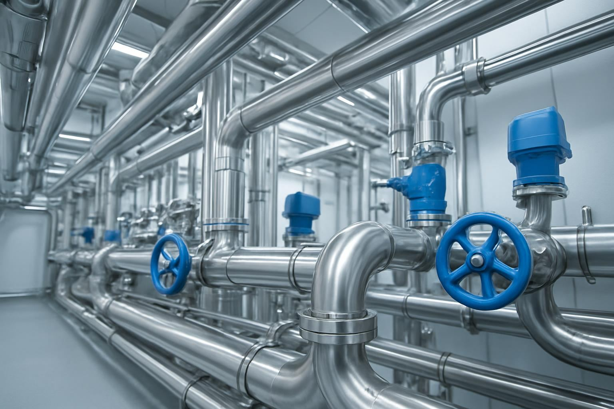

Syndics, restaurants, usines : besoin d'un débouchage industriel en urgence ? Nous intervenons à Bruxelles et partout en Belgique pour ne pas bloquer votre activité. Prix sur devis.
Les réseaux professionnels subissent des contraintes plus fortes (graisses de cuisine, produits chimiques, volume important). Nous avons l'équipement adapté.
Services dédiés :

Contactez-nous pour un devis rapide.